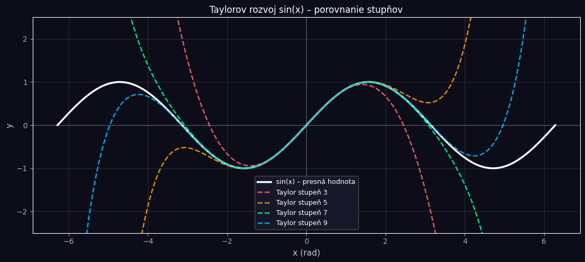

Symbolická matematika v Jupyter Notebooku#
Tento notebook predstavuje piatu a zároveň jedinečnú ukážkovú funkcionalitu Jupyter Notebooku: symbolickú matematiku pomocou knižnice SymPy. Na rozdiel od predchádzajúcich notebookov, kde sme počítali numericky, SymPy pracuje s matematickými výrazmi analyticky, teda presne tak ako pri ručnom výpočte na papieri.
Výsledky sa zobrazujú v matematickej notácii priamo v bunke notebooku. Jupyter Notebook sa tak stáva nielen nástrojom na vykresľovanie grafov, ale plnohodnotným prostredím pre analytickú matematiku schopným nahradiť klasické odvodenia na tabuli.
Čo SymPy dokáže#
Operácia |
Príkaz |
Popis |
|---|---|---|
Derivovanie |
|
Derivácia funkcie f podľa x |
Integrovanie |
|
Neurčitý integrál |
Určitý integrál |
|
Integrál od a do b |
Riešenie rovníc |
|
Analytické riešenie |
Diferenciálne rovnice |
|
Riešenie ODE |
Limity |
|
Limita funkcie |
Taylorov rad |
|
Rozvoj do radu |
Zjednodušenie |
|
Zjednodušenie výrazu |
Dosadenie |
|
Dosadenie hodnoty |
LaTeX výstup |
|
Generovanie LaTeX kódu |
[10]:
import sympy as sp
import numpy as np
import matplotlib.pyplot as plt
import ipywidgets as widgets
from IPython.display import display, clear_output
sp.init_printing(use_latex=True)
%matplotlib inline
plt.style.use('dark_background')
print("SymPy verzia:", sp.__version__)
print("Symbolický výstup aktivovaný.")
SymPy verzia: 1.14.0
Symbolický výstup aktivovaný.
1. Definícia symbolických premenných#
V SymPy musíme najprv deklarovať symbolické premenné. Môžeme pritom špecifikovať ich vlastnosti, napríklad či sú reálne, kladné alebo celé čísla. Tieto vlastnosti SymPy využíva pri zjednodušovaní výrazov.
[11]:
# Základné fyzikálne premenné
t = sp.Symbol('t', real=True, positive=True) # čas
x = sp.Symbol('x', real=True) # poloha
# Parametrické konštanty
s0 = sp.Symbol('s_0', real=True) # počiatočná poloha
v0 = sp.Symbol('v_0', real=True) # počiatočná rýchlosť
a0 = sp.Symbol('a_0', real=True) # zrýchlenie
m = sp.Symbol('m', positive=True) # hmotnosť
k = sp.Symbol('k', positive=True) # tuhosť pružiny
b = sp.Symbol('b', nonnegative=True) # koeficient tlmenia
g = sp.Symbol('g', positive=True) # gravitačné zrýchlenie
P = sp.Symbol('P', positive=True) # výkon motora
v = sp.Symbol('v', positive=True) # rýchlosť
print("Všetky symbolické premenné definované.")
print("Vlastnosti premenných informujú SymPy")
print("ako s nimi zaobchádzať pri zjednodušovaní.")
Všetky symbolické premenné definované.
Vlastnosti premenných informujú SymPy
ako s nimi zaobchádzať pri zjednodušovaní.
2. Kinematika – odvodzovanie základných vzťahov#
Začneme s polohou vozidla ako polynomickou funkciou času a symbolicky odvodíme rýchlosť a zrýchlenie derivovaním. Toto je presne to, čo by sme robili na tabuli, len Jupyter Notebook to urobí za nás a výsledok zobrazí v matematickej notácii.
[12]:
print("=" * 55)
print(" KINEMATIKA: Odvodzovanie základných vzťahov")
print("=" * 55)
# Poloha ako funkcia času
s_t = s0 + v0*t + sp.Rational(1,2)*a0*t**2
print("\nPoloha s(t):")
display(sp.Eq(sp.Function('s')(t), s_t))
# Prvá derivácia = rýchlosť
v_t = sp.diff(s_t, t)
print("\nRýchlosť v(t) = ds/dt:")
display(sp.Eq(sp.Function('v')(t), v_t))
# Druhá derivácia = zrýchlenie
a_t = sp.diff(s_t, t, 2)
print("\nZrýchlenie a(t) = d²s/dt²:")
display(sp.Eq(sp.Function('a')(t), a_t))
print("\nZrýchlenie je konštanta a₀, čo potvrdzuje")
print("rovnomerne zrýchlený pohyb.")
=======================================================
KINEMATIKA: Odvodzovanie základných vzťahov
=======================================================
Poloha s(t):
Rýchlosť v(t) = ds/dt:
Zrýchlenie a(t) = d²s/dt²:
Zrýchlenie je konštanta a₀, čo potvrdzuje
rovnomerne zrýchlený pohyb.
3. Brzdná dráha – analytické odvodenie#
Vypočítame brzdnú dráhu dvoma spôsobmi: integrovaním rýchlosti a z kinematickej rovnice. SymPy overí že obe metódy dajú rovnaký výsledok.
[13]:
print("=" * 55)
print(" BRZDNÁ DRÁHA: Dve metódy, jeden výsledok")
print("=" * 55)
a_brz = sp.Symbol('a_b', negative=True) # záporné spomalenie
v0_b = sp.Symbol('v_0', positive=True)
# Čas zastavenia
t_stop = sp.solve(v0_b + a_brz*t, t)[0]
print("\nČas zastavenia (v = 0):")
display(sp.Eq(sp.Symbol('t_{stop}'), t_stop))
# Metóda 1: integrovanie rýchlosti
v_brzd = v0_b + a_brz*t
s_int = sp.integrate(v_brzd, (t, 0, t_stop))
s_int = sp.simplify(s_int)
print("\nMetóda 1 – integrovaním rýchlosti:")
display(sp.Eq(sp.Symbol('s_{brzdenie}'), s_int))
# Metóda 2: z kinematickej rovnice v² = v₀² + 2as
# pri v=0: s = -v₀²/(2a)
s_kin = sp.Rational(-1,2) * v0_b**2 / a_brz
print("\nMetóda 2 – z kinematickej rovnice v²=v₀²+2as:")
display(sp.Eq(sp.Symbol('s_{brzdenie}'), s_kin))
# Overenie rovnosti
rovnost = sp.simplify(s_int - s_kin)
print(f"\nRozdiel výsledkov (má byť 0): {rovnost}")
print("Oba spôsoby dávajú rovnaký výsledok.")
# Numerický príklad
print("\n" + "─"*55)
print(" Príklad: v₀ = 90 km/h, spomalenie = 6 m/s²")
print("─"*55)
v0_num = 90/3.6
a_num = -6
s_num = float(s_int.subs([(v0_b, v0_num), (a_brz, a_num)]))
print(f" Brzdná dráha = {s_num:.2f} m")
=======================================================
BRZDNÁ DRÁHA: Dve metódy, jeden výsledok
=======================================================
Čas zastavenia (v = 0):
Metóda 1 – integrovaním rýchlosti:
Metóda 2 – z kinematickej rovnice v²=v₀²+2as:
Rozdiel výsledkov (má byť 0): 0
Oba spôsoby dávajú rovnaký výsledok.
───────────────────────────────────────────────────────
Príklad: v₀ = 90 km/h, spomalenie = 6 m/s²
───────────────────────────────────────────────────────
Brzdná dráha = 52.08 m
4. Energia vozidla – práca a výkon#
Vypočítame kinetickú energiu, prácu vykonanú brzdnou silou a overíme energetickú bilanciu symbolicky. Toto je klasický fyzikálny výpočet, ktorý SymPy zvládne v plnej symbolickej forme.
[14]:
print("=" * 55)
print(" ENERGIA: Kinetická energia a práca")
print("=" * 55)
v_sym = sp.Symbol('v', positive=True)
F_sym = sp.Symbol('F', positive=True)
s_sym = sp.Symbol('s', positive=True)
# Kinetická energia
E_k = sp.Rational(1,2) * m * v_sym**2
print("\nKinetická energia:")
display(sp.Eq(sp.Symbol('E_k'), E_k))
# Derivácia kinetickej energie podľa rýchlosti
dEk_dv = sp.diff(E_k, v_sym)
print("\ndE_k/dv = p (hybnosť):")
display(sp.Eq(sp.Symbol('dE_k/dv'), dEk_dv))
# Práca = sila × dráha
W = F_sym * s_sym
print("\nPráca W = F·s:")
display(sp.Eq(sp.Symbol('W'), W))
# Výkon = dW/dt = F·v
t_sym = sp.Symbol('t', positive=True)
s_cas = v_sym * t_sym
W_cas = F_sym * s_cas
P_sym = sp.diff(W_cas, t_sym)
print("\nVýkon P = dW/dt = F·v:")
display(sp.Eq(sp.Symbol('P'), P_sym))
# Hnacia sila z výkonu
F_motor = P / v_sym
print("\nHnacia sila motora F = P/v:")
display(sp.Eq(sp.Symbol('F_{motor}'), F_motor))
# Numerický príklad
print("\n" + "─"*55)
print(" Príklad: P = 100 kW, v = 50 km/h = 13.9 m/s")
print("─"*55)
F_num = float(F_motor.subs([(P, 100000), (v_sym, 50/3.6)]))
print(f" Hnacia sila = {F_num:.1f} N")
=======================================================
ENERGIA: Kinetická energia a práca
=======================================================
Kinetická energia:
dE_k/dv = p (hybnosť):
Práca W = F·s:
Výkon P = dW/dt = F·v:
Hnacia sila motora F = P/v:
───────────────────────────────────────────────────────
Príklad: P = 100 kW, v = 50 km/h = 13.9 m/s
───────────────────────────────────────────────────────
Hnacia sila = 7200.0 N
5. Pohybová rovnica oscilátora#
Toto je najsilnejšia ukážka SymPy: analytické riešenie diferenciálnej rovnice druhého rádu. SymPy nájde všeobecné riešenie pohybovej rovnice tlmeného oscilátora vrátane integračných konštánt.
[15]:
print("=" * 55)
print(" ODE: Analytické riešenie pohybovej rovnice")
print("=" * 55)
# Symbolická funkcia x(t)
x_fn = sp.Function('x')
# Pohybová rovnica: m*x'' + b*x' + k*x = 0
ode = sp.Eq(
m * x_fn(t).diff(t,2) + b * x_fn(t).diff(t) + k * x_fn(t),
0
)
print("\nPohybová rovnica:")
display(ode)
# Všeobecné riešenie
print("\nVšeobecné riešenie (SymPy):")
riesenie = sp.dsolve(ode, x_fn(t))
display(riesenie)
print("\nVysvetlenie:")
print("C1, C2 sú integračné konštanty určené")
print("z počiatočných podmienok x(0) a v(0).")
=======================================================
ODE: Analytické riešenie pohybovej rovnice
=======================================================
Pohybová rovnica:
Všeobecné riešenie (SymPy):
Vysvetlenie:
C1, C2 sú integračné konštanty určené
z počiatočných podmienok x(0) a v(0).
6. Charakteristická rovnica a vlastné frekvencie#
Analyticky odvodíme vlastnú uhlovú frekvenciu, periódu kmitania a kritické tlmenie. Tieto vzorce sú základom pre návrh tlmičov a pružinových sústav.
[16]:
print("=" * 55)
print(" VLASTNÉ FREKVENCIE: Symbolické odvodenie")
print("=" * 55)
# Vlastná uhlová frekvencia
omega0_sym = sp.sqrt(k/m)
print("\nVlastná uhlová frekvencia ω₀:")
display(sp.Eq(sp.Symbol('omega_0'), omega0_sym))
# Perióda kmitania
T_sym = 2 * sp.pi / omega0_sym
T_zjedn = sp.simplify(T_sym)
print("\nPerióda kmitania T = 2π/ω₀:")
display(sp.Eq(sp.Symbol('T'), T_zjedn))
# Kritické tlmenie
b_krit_sym = 2 * sp.sqrt(k*m)
print("\nKritické tlmenie b_krit = 2√(km):")
display(sp.Eq(sp.Symbol('b_{krit}'), b_krit_sym))
# Pomer tlmenia (damping ratio)
zeta = b / b_krit_sym
zeta_zjedn = sp.simplify(zeta)
print("\nPomer tlmenia ζ = b/b_krit:")
display(sp.Eq(sp.Symbol('zeta'), zeta_zjedn))
print("\nRežimy tlmenia:")
print(" ζ < 1 → podtlmený (kmitanie s útlmom)")
print(" ζ = 1 → kritický (najrýchlejší návrat)")
print(" ζ > 1 → pretlmený (pomalý návrat)")
# Symbolický výpočet tlmenej frekvencie
omega_d = omega0_sym * sp.sqrt(1 - zeta_zjedn**2)
omega_d_zjedn = sp.simplify(omega_d)
print("\nTlmená frekvencia ω_d = ω₀·√(1-ζ²):")
display(sp.Eq(sp.Symbol('omega_d'), omega_d_zjedn))
=======================================================
VLASTNÉ FREKVENCIE: Symbolické odvodenie
=======================================================
Vlastná uhlová frekvencia ω₀:
Perióda kmitania T = 2π/ω₀:
Kritické tlmenie b_krit = 2√(km):
Pomer tlmenia ζ = b/b_krit:
Režimy tlmenia:
ζ < 1 → podtlmený (kmitanie s útlmom)
ζ = 1 → kritický (najrýchlejší návrat)
ζ > 1 → pretlmený (pomalý návrat)
Tlmená frekvencia ω_d = ω₀·√(1-ζ²):
7. Taylorov rozvoj – aproximácia funkcií#
SymPy dokáže rozvinúť ľubovoľnú funkciu do Taylorovho radu. Toto je užitočné pri linearizácii nelineárnych rovníc, čo je bežná technika v strojárstve pri analýze malých kmitov.
[8]:
print("=" * 55)
print(" TAYLOROV ROZVOJ: Aproximácia sin(x)")
print("=" * 55)
x_sym = sp.Symbol('x')
# Taylorov rozvoj sin(x) okolo 0
print("\nTaylorov rozvoj sin(x) okolo x=0:")
for n in [3, 5, 7, 9]:
rad = sp.series(sp.sin(x_sym), x_sym, 0, n+1).removeO()
print(f"\n Stupeň {n}:")
display(sp.Eq(sp.Symbol(f'sin(x) ≈ T_{n}(x)'), rad))
# Vizualizácia
print("\nVizualizácia aproximácií:")
x_num = np.linspace(-2*np.pi, 2*np.pi, 500)
fig, ax = plt.subplots(figsize=(11, 5))
fig.patch.set_facecolor('#0d0d1a')
ax.set_facecolor('#0d0d1a')
ax.plot(x_num, np.sin(x_num), color='white', lw=2.5,
label='sin(x) – presná hodnota')
farby = ['#FF6B6B', '#FFA500', '#00FF88', '#00BFFF']
for n, farba in zip([3, 5, 7, 9], farby):
rad_fn = sp.lambdify(x_sym,
sp.series(sp.sin(x_sym), x_sym, 0, n+1).removeO(),
'numpy')
y = rad_fn(x_num)
ax.plot(x_num, y, color=farba, lw=1.8, linestyle='--',
label=f'Taylor stupeň {n}', alpha=0.85)
ax.set_ylim(-2.5, 2.5)
ax.set_xlabel('x (rad)', color='#cccccc', fontsize=11)
ax.set_ylabel('y', color='#cccccc', fontsize=11)
ax.set_title('Taylorov rozvoj sin(x) – porovnanie stupňov',
color='white', fontsize=12)
ax.legend(fontsize=9, facecolor='#1a1a2e', edgecolor='#555555')
ax.grid(True, alpha=0.12)
ax.tick_params(colors='#aaaaaa')
ax.axhline(y=0, color='white', lw=0.8, alpha=0.3)
ax.axvline(x=0, color='white', lw=0.8, alpha=0.3)
plt.tight_layout()
plt.show()
print("Čím vyšší stupeň, tým presnejšia aproximácia")
print("na väčšom intervale.")
=======================================================
TAYLOROV ROZVOJ: Aproximácia sin(x)
=======================================================
Taylorov rozvoj sin(x) okolo x=0:
Stupeň 3:
Stupeň 5:
Stupeň 7:
Stupeň 9:
Vizualizácia aproximácií:

Čím vyšší stupeň, tým presnejšia aproximácia
na väčšom intervale.
8. Interaktívne dosadzovanie a generovanie LaTeX#
SymPy dokáže automaticky vygenerovať LaTeX kód pre ľubovoľný výraz. Toto je užitočné pri písaní odborných textov a záverečných prác.
[9]:
out = widgets.Output()
def zobraz_sympy(m_val, k_val, b_val):
omega0_val = float(sp.sqrt(k_val / m_val))
T_val = float(2 * np.pi / omega0_val)
b_krit_val = float(2 * np.sqrt(k_val * m_val))
pomer = b_val / b_krit_val
if pomer < 0.99:
rezim = 'PODTLMENÝ'
farba_r = '#00FF88'
elif pomer <= 1.01:
rezim = 'KRITICKY TLMENÝ'
farba_r = '#FFD700'
else:
rezim = 'PRETLMENÝ'
farba_r = '#FF6B6B'
from scipy.integrate import solve_ivp
t_sim = np.linspace(0, 6*T_val, 1500)
sol = solve_ivp(
lambda t, y: [y[1], (-b_val*y[1] - k_val*y[0])/m_val],
(0, 6*T_val), [1.0, 0.0],
t_eval=t_sim, method='RK45', rtol=1e-8
)
with out:
clear_output(wait=True)
fig, axes = plt.subplots(1, 3, figsize=(14, 4))
fig.patch.set_facecolor('#0d0d1a')
# Výchylka
ax1 = axes[0]
ax1.set_facecolor('#0d0d1a')
ax1.plot(sol.t, sol.y[0], color='#00BFFF', lw=2.2)
ax1.axhline(y=0, color='white', lw=1, ls='--', alpha=0.3)
if pomer < 1:
alpha_d = b_val / (2*m_val)
ax1.plot(sol.t, np.exp(-alpha_d*sol.t),
color='#FFD700', lw=1.5, ls='--',
alpha=0.7, label='Obálka')
ax1.plot(sol.t, -np.exp(-alpha_d*sol.t),
color='#FFD700', lw=1.5, ls='--', alpha=0.7)
ax1.legend(fontsize=8, facecolor='#1a1a2e')
ax1.fill_between(sol.t, sol.y[0], 0,
where=(sol.y[0]>=0), alpha=0.1, color='#00BFFF')
ax1.fill_between(sol.t, sol.y[0], 0,
where=(sol.y[0]<0), alpha=0.1, color='#FF6B6B')
ax1.set_xlabel('Čas t (s)', color='#cccccc')
ax1.set_ylabel('Výchylka x (m)', color='#cccccc')
ax1.set_title(f'Výchylka\nRežim: {rezim}',
color=farba_r, fontsize=10)
ax1.grid(True, alpha=0.12)
ax1.tick_params(colors='#aaaaaa')
# Fázový diagram
ax2 = axes[1]
ax2.set_facecolor('#0d0d1a')
sc = ax2.scatter(sol.y[0], sol.y[1],
c=sol.t, cmap='plasma', s=2, alpha=0.8)
ax2.axhline(y=0, color='white', lw=0.8, alpha=0.3)
ax2.axvline(x=0, color='white', lw=0.8, alpha=0.3)
ax2.set_xlabel('Výchylka x (m)', color='#cccccc')
ax2.set_ylabel('Rýchlosť v (m/s)', color='#cccccc')
ax2.set_title('Fázový diagram', color='white', fontsize=10)
ax2.grid(True, alpha=0.12)
ax2.tick_params(colors='#aaaaaa')
plt.colorbar(sc, ax=ax2, label='Čas (s)')
# Porovnanie všetkých troch režimov
ax3 = axes[2]
ax3.set_facecolor('#0d0d1a')
for b_por, farba, nazov in [
(b_krit_val*0.3, '#00FF88', 'Podtlmený'),
(b_krit_val*1.0, '#FFD700', 'Kritický'),
(b_krit_val*3.0, '#FF6B6B', 'Pretlmený')
]:
sol_p = solve_ivp(
lambda t, y: [y[1],
(-b_por*y[1]-k_val*y[0])/m_val],
(0, 6*T_val), [1.0, 0.0],
t_eval=t_sim, method='RK45'
)
ax3.plot(sol_p.t, sol_p.y[0], color=farba,
lw=1.8, label=nazov, alpha=0.9)
ax3.axhline(y=0, color='white', lw=0.8, alpha=0.3)
ax3.set_xlabel('Čas t (s)', color='#cccccc')
ax3.set_ylabel('Výchylka x (m)', color='#cccccc')
ax3.set_title('Porovnanie režimov', color='white', fontsize=10)
ax3.legend(fontsize=8, facecolor='#1a1a2e', edgecolor='#555555')
ax3.grid(True, alpha=0.12)
ax3.tick_params(colors='#aaaaaa')
fig.suptitle(
f'SymPy │ m={m_val} kg │ k={k_val} N/m │ '
f'b={b_val} N·s/m │ ζ={pomer:.3f}',
fontsize=11, color='white', y=1.02
)
plt.tight_layout()
plt.show()
# Symbolické výsledky s dosadením
print(f'{"═"*55}')
print(f' Symbolicky odvodené, numericky dosadené:')
print(f'{"─"*55}')
print(f' ω₀ = √(k/m) = √({k_val}/{m_val})'
f' = {omega0_val:.4f} rad/s')
print(f' f₀ = ω₀/(2π) = {omega0_val/(2*np.pi):.4f} Hz')
print(f' T = 2π/ω₀ = {T_val:.4f} s')
print(f' b_krit = 2√(km) = {b_krit_val:.4f} N·s/m')
print(f' ζ = b/b_krit = {pomer:.4f}')
print(f'{"─"*55}')
print(f' Režim tlmenia: {rezim}')
print(f'{"─"*55}')
# LaTeX kód pre vzorce
print(f' LaTeX kód pre ω₀:')
print(f' ${sp.latex(sp.sqrt(k/m))}$')
print(f'\n LaTeX kód pre T:')
print(f' ${sp.latex(2*sp.pi/sp.sqrt(k/m))}$')
print(f'\n LaTeX kód pre b_krit:')
print(f' ${sp.latex(2*sp.sqrt(k*m))}$')
print(f'{"═"*55}')
widgets.interact(
zobraz_sympy,
m_val=widgets.FloatSlider(
value=1.0, min=0.1, max=5.0, step=0.1,
description='Hmotnosť m (kg):',
style={'description_width': '160px'},
layout=widgets.Layout(width='500px')),
k_val=widgets.FloatSlider(
value=10.0, min=1.0, max=100.0, step=1.0,
description='Tuhosť k (N/m):',
style={'description_width': '160px'},
layout=widgets.Layout(width='500px')),
b_val=widgets.FloatSlider(
value=1.0, min=0.0, max=30.0, step=0.5,
description='Tlmenie b (N·s/m):',
style={'description_width': '160px'},
layout=widgets.Layout(width='500px'))
)
display(out)
Záver#
Tento notebook ukázal SymPy ako plnohodnotný nástroj pre analytickú matematiku v Jupyter Notebooku.
Derivovanie - polohy dalo exaktné vzorce pre rýchlosť a zrýchlenie bez numerickej chyby
Integrovanie - rýchlosti dalo presný vzorec brzdnej dráhy, overený dvoma nezávislými metódami
Energetická analýza - symbolicky odvodila vzťah medzi výkonom, silou a rýchlosťou
Analytické riešenie ODE - poskytlo všeobecné riešenie pohybovej rovnice tlmeného oscilátora
Taylorov rozvoj - demonštroval linearizáciu nelineárnych funkcií, kľúčovú techniku v strojárstve
LaTeX generovanie - umožňuje priamo exportovať vzorce do odborných textov a záverečných prác
Jupyter Notebook spojením SymPy, NumPy, SciPy a Matplotlib pokrýva celý rozsah matematických výpočtov potrebných pre výučbu fyziky v technickom vzdelávaní.
[ ]: